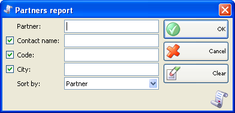
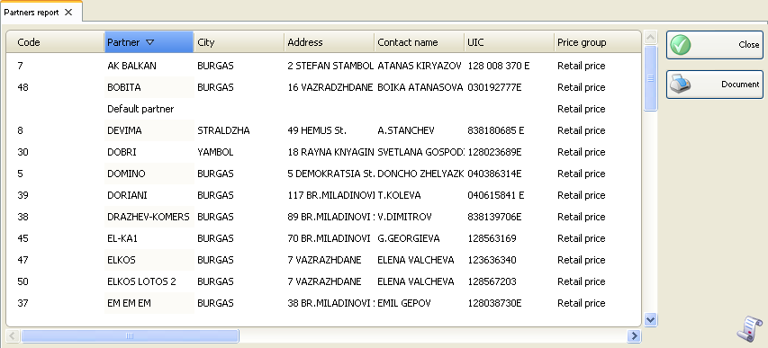

Raport parteneri
Folositi Raportul partneri pentru a tipari lista informatiilor despre parteneri. Puteti folosi acest raport pentru a genera liste pentru rute, orase si regiuni si a tipari numere de inregistrare ale partenerilor. Raportul arata toate campurile completate in lista de parteneri si se poate afisa dupe diferite criterii (nume, cod, etc.).
In prima fereastra a raportului se pot specifica criteriile de filtrare si campurile care se vor vizualiza.
Numai randurile bifate se vor vizualiza in raport.

Se pot allege filtrari pentru fiecare camp prin apasarea tastei� F4.
Se poate limita raportul la un singur criteriu de filtrare � de exemplu, vizualizare lista parteneri dintr-un anumit oras sau se pot aplica mai multe criterii de filtrare in acelasi timp � de exemplu, vizualizare lista de parteneri dintr-un anumit oras care au in cod cifra 3.
Pentru stergerea filtrarilor specificate, click pe butonul Clear. In aceasta situatie raportul va afisa toate operatiile fara nici o restrictie.
Click pe butonul OK pentru a genera raportul dupa specificarea criteriilor de filtrare. Click pe butonul Cancel pentru inchiderea ferestrei.

�2006-2012 Microinvest, All rights reserved